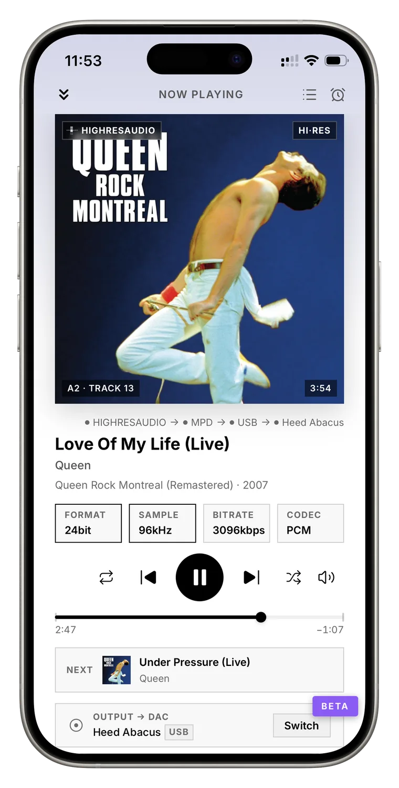
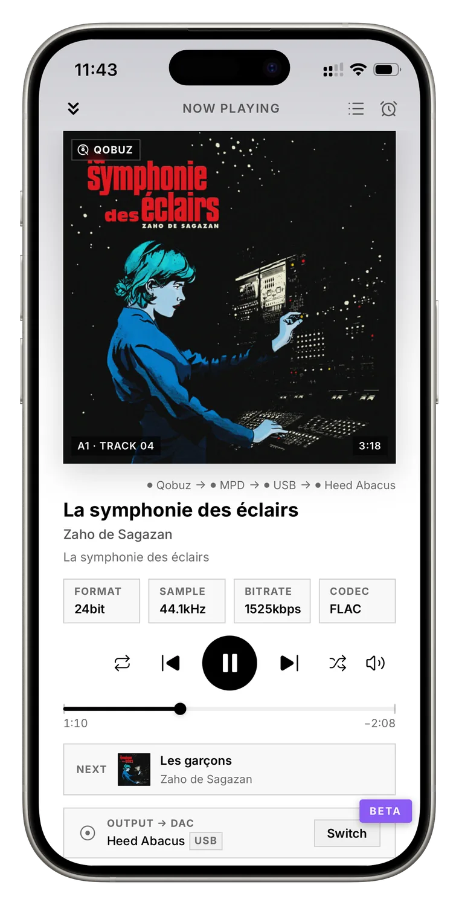
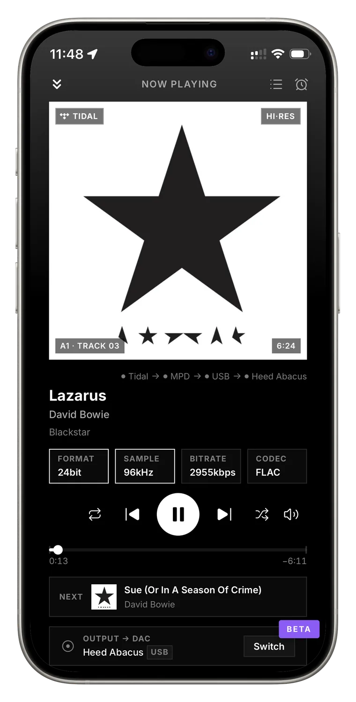
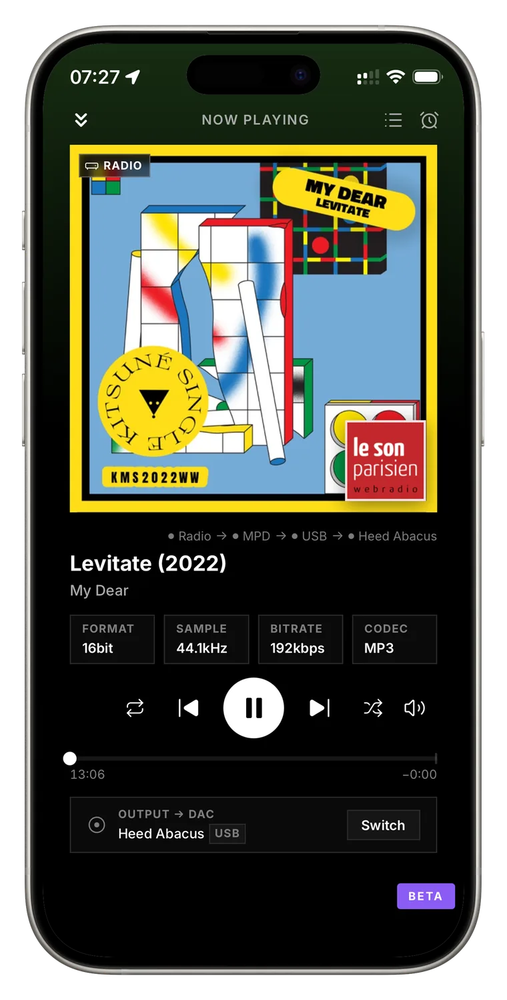
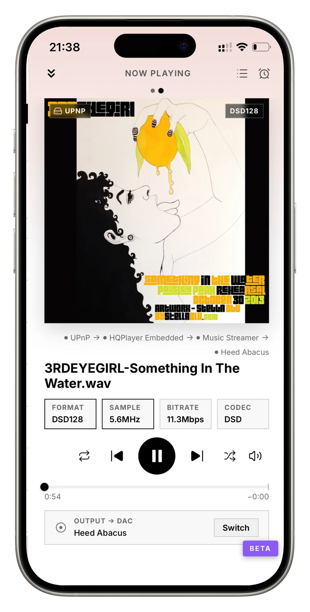
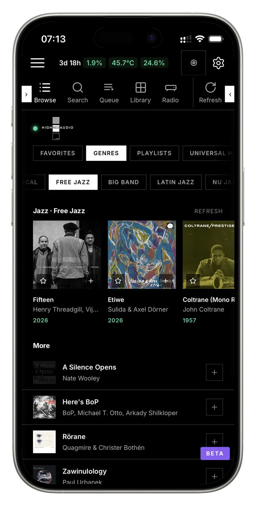
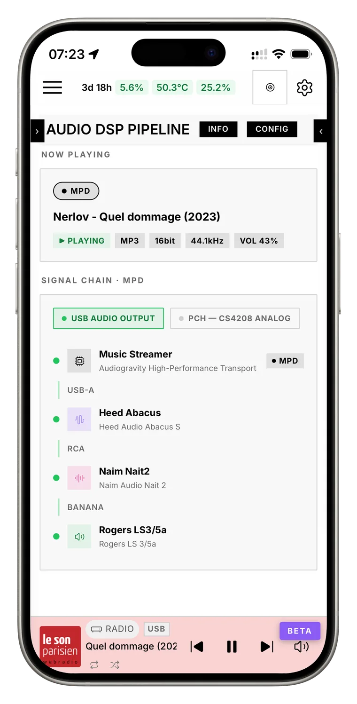
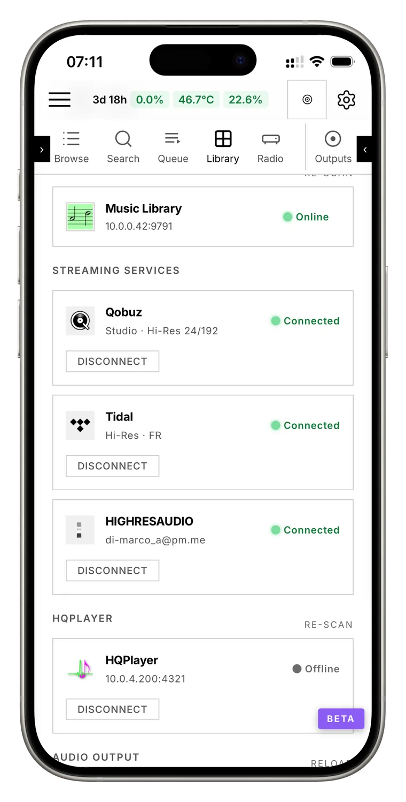
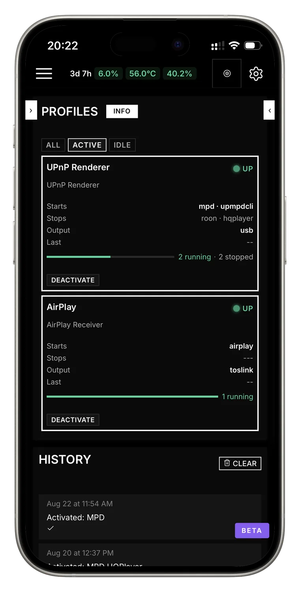
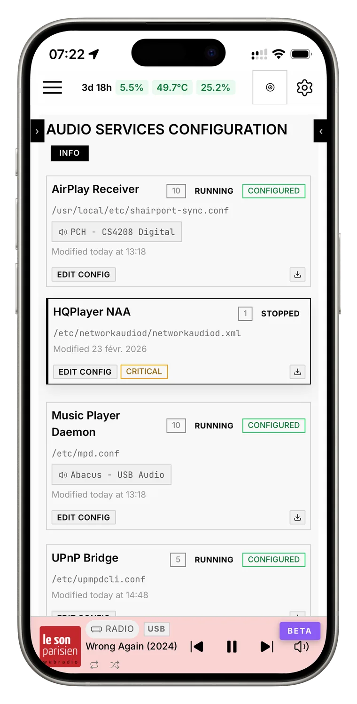

The audiophile streamer
Live
Audiogravity
Audiogravity is a streamer. A conductor, not a soloist.
MPD, Roon, HQPlayer, AirPlay, UPnP sources and renderers, internet radio — every engine, every source, down to DSD and Hi-Res PCM. Send your library to any network renderer. Audiogravity installs, configures and conducts every one of them — from the system up to your Qobuz, Tidal and HIGHRESAUDIO libraries. It replaces none of them. One interface. Total control.
30 d
Free trial
€49
Pro · lifetime
1×
Machine · perpetual
No
Subscription · ever














HIGHRESAUDIO
Their Hi-Res catalogue, played on your own DAC — with the
resolution you actually get, in writing.
From HIGHRESAUDIO
To your DAC
The real resolution
Qobuz
Qobuz plays through your own chain — and the screen names every
link of it, down to the DAC.
From Qobuz
The whole chain
What is really playing
Switch output mid-track
Tidal
Tidal runs through the same chain as everything else — same
controls, same readout, same DAC.
Tidal, signed in
Hi-Res, stated
Your DAC
Radio
A web stream gets the same treatment as a local file: named
source, named codec, your own DAC at the end.
Internet radio
Same chain
Same DAC
HQPlayer
HQPlayer takes the stream, and Audiogravity still
reports what comes out of it — here DSD128, and the DAC receiving it.
Fed over UPnP
Through HQPlayer
What comes out
Browsing
Every service browsed the same way — genres, playlists, new
releases — from one screen.
Their catalogue
By sub-genre
Add in one tap
Always playing
Browse Qobuz's new releases while a station keeps playing — the
transport never leaves the bottom of the screen.
New releases
Add to the queue
Playing throughout
Signal path
The whole chain drawn out — streamer, DAC, amplifier, speakers —
with the link between each one named.
The active output
Every box, in order
To the speakers
Sources
Your library and your subscriptions, connected once and shown as
they are — online, connected, or not.
Your own files
All connected
HQPlayer too
Services
Every audio service on the box, what it is using, and the buttons
to stop or restart it.
Up or down
What it costs
Start, stop, on boot
Profiles
One tap swaps the whole setup: what starts, what stops, which
output — and a log of every switch.
One per use
Starts and stops
What ran, and when
Configuration
The real configuration files, editable in place — with the output
each service actually uses shown beside it.
The real file
Flagged if critical
Its real device
Tuning
Jitter measured over time, and the scheduling priority of every
process that touches the audio.
Jitter, measured
RT priorities
Set per process
Settings
Export the whole configuration to a file, pick a theme, and sign
in with Face ID instead of a password.
Export the lot
Light or dark
Face ID